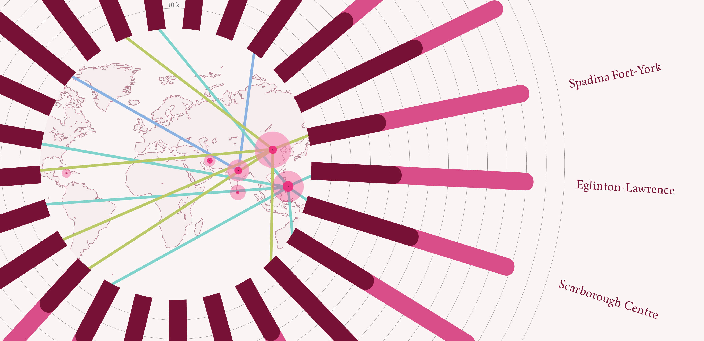
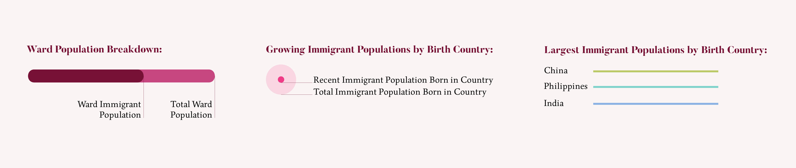

Feb - Mar '19 (4 weeks)
Adobe Illustrator
For this project, I zeroed in on the immigrant populations of different Toronto wards. I found that there were three countries that had particularly large immigrant populations in Toronto: China, Philippines and India. I also found that many of the largest overall immigrant populations also had the largest recent immigrant populations. These were two points that I wanted to highlight in my data visualization.
I gathered all of my data from Census Canada.
The pink bars show how large the population of each ward is, and the purple bars show how much of that population is made up of immigrants. Each ring represents 10k inhabitants. Don Valley East has the smallest population, while Etobicoke-Lakeshore has the largest, though the two wards have similarly sized immigrant populations.
The map shows what countries are the top source of immigrants: China, Philippines and India. The smaller circles also show the recent immigrant population versus the total immigrant population that has arrived from a given country. For example, a large portion of the immigrants from Iran have arrived in the past decade.
